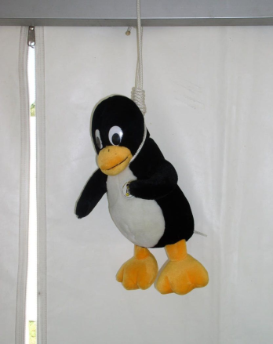

I've already stated that politics in software is a cancer ruining everything. Thing is, politics anywhere, ruins everything. But that's not the point.
That post was about politics-related licenses, and why they're dogshit. There was a point I never touched, which were codes of conduct. Everyone already talked about them, and there was nothing much I could add.
A good example of a shitty CoC was the FreeBSD project. People flunked out and left ports behind because of the cancer that reached the core FreeBSD team.
It was a good shitshow, because no one uses FreeBSD. Everyone laughed, the core team were butthurt to the bones and kept blocking everyone on Twitter, etc.
But there's one biological thing about cancer, and that is - it spreads. It's always spreading, slow or fast, it's duplicating. And it has reached a part of the sector that people actually do care about. It's Linux, the kernel.
The old code of conflict was replaced with a code of conduct - git log.
Now, it would be fine if it was as sensible as the old code of conflict.
HHAHAHAHA, of course it isn't. Why the fuck would I be writing about it then?
The thing about codes of conduct is that they are political, it may be the No code of conduct protesting against code of conducts or LITERALLY EVERYTHING ELSE that are full of idiotic bullshit.
What CoC did Linux choose?
It chose the Contributor Covenant code of conduct. Let's look at it.
+In the interest of fostering an open and welcoming environment, we as +contributors and maintainers pledge to making participation in our project and +our community a harassment-free experience for everyone, regardless of age, body +size, disability, ethnicity, sex characteristics, gender identity and +expression, level of experience, education, socio-economic status, nationality, +personal appearance, race, religion, or sexual identity and orientation.
Already, the question comes up - why? Why in the fuck did you need to write all this bullshit? Isn't a simple
Don't discriminate.
enough? Apparently not.
+* Using welcoming and inclusive language +* Being respectful of differing viewpoints and experiences +* Gracefully accepting constructive criticism +* Focusing on what is best for the community +* Showing empathy towards other community members
Alright, fine, but how about
Be nice.
Seriously, these piles of stinking shit are needlessly long and bring no real point.
+This Code of Conduct applies both within project spaces and in public spaces +when an individual is representing the project or its community.
This is the part that makes CoCs different from the rules and from the project. ...right?
Mostly, the people that maintain contributions also maintain the discussion channels. So, no, this means nothing, if you are banned from the mailing list, your pull request might be denied anyway.
And remember, that the CoC means jack shit for unofficial discussion channels/forks. The CoC can be ignored and removed. As much as Rustees don't want to admit, there is a Nazist Rust user group somewhere in Discord.
Enough about that, let's look at the people behind the CoC.
I'll look at two people here
Ada
Ada is well known for shittying up everything involving its name.
Good example - Issue #941 @ opal/opal. It's an interesting read if you have the time.
In short, Ada's fucking stupid. Just like anyone like it.
But let's look at its reaction to its CoC getting added to Linux.
...
Let me repeat again - politics is a cancer. It ruins everything it touches. Do you know what this cancer did? It touched Linux.
There's nothing much to say more about Ada. It's very happy and is doubling down on being a retard.
Linus
The man, is clearly broken.
He's going on vacation, to "learn into empathy", but something is just not right, and it shows.
His daughter signed the post-meritocracy manifesto made by Ada
He doesn't want to go to his conference
It's an absolute shit show, and one thing is in danger - Linus. The part of the Linux kernel that makes it work.
Conclusion
The core of open source is not discriminating. Codes of conduct are a good example of how that ideology is failing.
Politics is a cancer. I'm saying this probably the 500th time, but here is no other way to put it. Open-mindedness and sanity are rare nowadays, and it shows.
Dark days ahead, strap in.

P.S - if you're thinking about moving to OpenBSD, I'll laugh at you, and you'll want to shoot yourself when you realise that to get your mouse to even marginally work you'll need to write a 1000 line Xorg.conf file